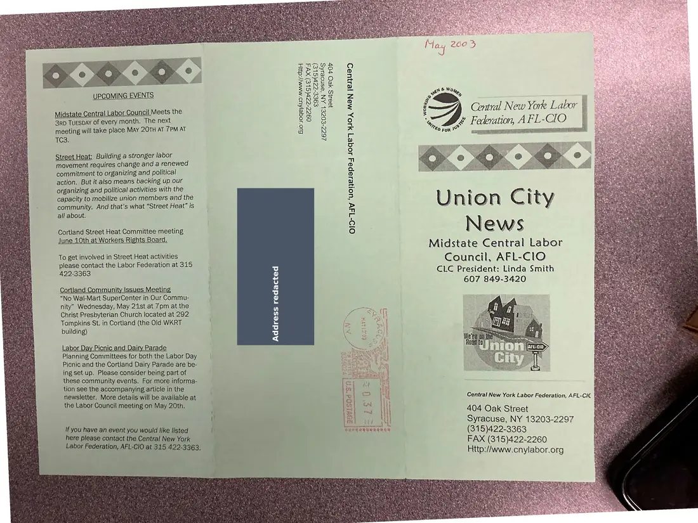
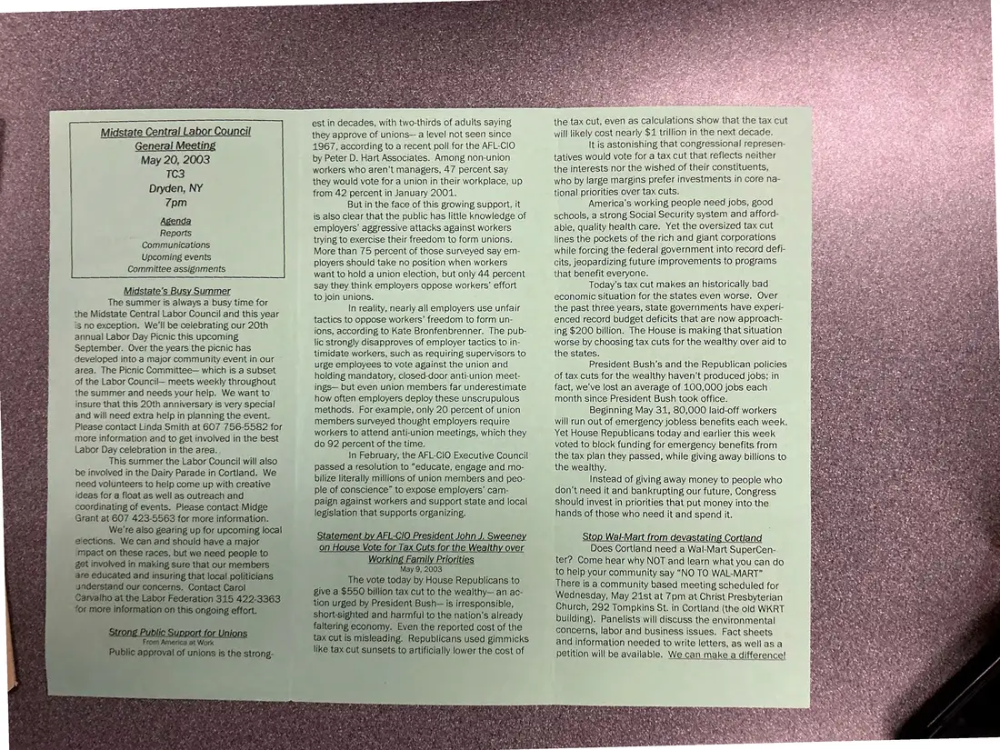

Newsletter, 2 pages
Union City News, Midstate Central Labor Council, May 2003
May 2003
Announces the May 20, 2003 general meeting and covers summer organizing, a statement on tax cuts, and a Wal-Mart Supercenter fight in Cortland.
Download or cite this itemPages


(open zoom view)A personal home address has been covered on this page.
Read the page text (OCR, contains errors)
This text was read from the photograph (OCR) and has not been corrected. The image is the authoritative record.
PCOMING EVENT
Midstate Central Labor Council Meets the
3rp TuesDAY of every month. The next
meeting will take place MAY 20TH AT 7PM AT
TC3.
Street Heat: Building a stronger labor
movement requires change and a renewed
commitment to organizing and political
action. But it also means backing up our
organizing and political activities with the
capacity to mobilize union members and the
community. And that's what “Street Heat” is
all about.
Cortland Street Heat Committee meeting
June 10th at Workers Rights Board.
To get involved in Street Heat activities
please contact the Labor Federation at 315
422-3363
Cortland Community lssues Meeting
“No Wal-Mart SuperCenter in Our Commu-
nity” Wednesday, May 21st at 7pm at the
Christ Presbyterian Church located at 292
Tompkins St. in Cortland (the Old WKRT
building)
Labor Day Picnic and Dairy Parade
Planning Committees for both the Labor Day
Picnic and the Cortland Dairy Parade are be-
ing set up. Please consider being part of
these community events. For more informa-
tion see the accompanying article in the
newsletter, More details will be available at
the Labor Council meeting on May 20th.
{f you have an event you would like listed
here please contact the Central New York
Labor Federation, AFL-CIO at 315 422-3363,
€9SE-czr(SLe)
26ZZ-CO0ZEL AN ‘osnoesg
JOSS X2O vOvV
Bio soge|Auo mMawy//:daH
ogzz-z2r(SL€) Xv4
O1D-T4v ‘uoHelapey J0qe7] 4JOA MON Je4}U9D
xe]
xe]
My)
xe)
xe)
tnt
ttt
tr Wh RD a A a hh
ees Pak
Lae a |
y hee
: Central New York Labor |
eS é Federation, AFL-CIO _ |
720 FoR” ase mana
Union City
News
Midstate Central Labor
Council, AFL-ClO
CLC President: Linda Smith
607 849-3420
Central New York Labor Federation, AFL-CIC .
404 Oak Street
Syracuse, NY 13203-2297
(315)422-3363
FAX (315)422-2260
Http:/www.cnylabor.org

(open zoom view)Read the page text (OCR text, mostly readable)
This text was read from the photograph (OCR) and has not been corrected. The image is the authoritative record.
Midstate Central Labor Council i atin, May 20, 200 Tc3 Dryden, NY 7pm Agenda Reports Communications Upcoming events Committee assignments Midstate’s Busy Summer The summer is always a busy time for the Midstate Central Labor Council and this year is no exception. We'll be celebrating our 20th annual Labor Day Picnic this upcoming September. Over the years the picnic has developed into a major community event in our area. The Picnic Committee— which is a subset of the Labor Council— meets weekly throughout the summer and needs your help. We want to insure that this 20th anniversary is very special and will need extra help in planning the event. Please contact Linda Smith at 607 756-5582 for more information and to get involved in the best Labor Day celebration in the area... This summer the Labor Council will also be involved in the Dairy Parade in Cortland. We need volunteers to help come up with creative ideas for a float as well as outreach and coordinating of events. Please contact Midge Grant at 607 423-5563 for more information. for upcoming local est in decades, with two-thirds of adults saying they approve of unions— a level not seen since 41967, according to a recent poll for the AFL-CiO by Peter D. Hart Associates. Among non-union workers who aren't managers, 47 percent say they would vote for a union in their workplace, up from 42 percent in January 2001. But in the face of this growing support, it is also clear that the public has little knowledge of employers’ aggressive attacks against workers trying to exercise their freedom to form unions. More than 75 percent of those surveyed say em- ployers should take no position when workers want to hold a union election, but only 44 percent say they think employers oppose workers’ effort to join unions. In reality, nearly all employers use unfair tactics to oppose workers’ freedom to form un- ions, according to Kate Bronfenbrenner. The pub- lic strongly disapproves of employer tactics to in- timidate workers, such as requiring supervisors to urge employees to vote against the union and holding mandatory, closed-door anti-union meet- ings— but even union members far underestimate how often employers deploy these unscrupulous methods. For example, only 20 percent of union members surveyed thought employers require workers to attend anti-union meetings, which they do 92 percent of the time. In February, the AFL-CIO Executive Council passed a resolution to “educate, engage and mo- bilize literally millions of union members and peo- ple of conscience” to expose employers’ cam- paign against workers and support state and local legislation that supports organizing. forking Family Prioriti May 9, 2003 The vote today by House Republicans to lion tax cut to the wealthy— an ac- President Bush— is irresponsible, ven the reported cost of the is misleading. Republicans used gimmicks cut sunsets to artificially lower the cost of the tax cut, even as calculations show that the tax cut will likely cost nearly $1 trillion in the next decade. It is astonishing that congressional represen- tatives would vote for a tax cut that reflects neither the interests nor the wished of their constituents, who by large margins prefer investments in core na- tional priorities over tax cuts. America’s working people need jobs, good schools, a strong Social Security system and afford- able, quality health care. Yet the oversized tax cut : Pus ope ae lines the pockets of the rich and giant corporations ioe aa : : while forcing the federal government into record defi- cits, jeopardizing future improvements to programs that benefit everyone. Today’s tax cut makes an historically bad economic situation for the states even worse. Over the past three years, state governments have experi- enced record budget deficits that are now approach- ing $200 billion. The House is making that situation worse by choosing tax cuts for the wealthy over aid to the states. President Bush’s and the Republican policies of tax cuts for the wealthy haven’t produced jobs; in fact, we've lost an average of 100,000 jobs each month since President Bush took office. Beginning May 31, 80,000 laid-off workers will run out of emergency jobless benefits each week. Yet House Republicans today and earlier this week voted to block funding for emergency benefits from the tax plan they passed, while giving away billions to the wealthy. Instead of giving away money to people who don’t need it and bankrupting our future, Congress should invest in priorities that put money into the hands of those who need it and spend it. top Wal- from devastating Co Does Cortland need a Wal-Mart SuperCen- ter? Come hear why NOT and learn what you can do to help your community say “NO TO WAL-MART” There is a community based meeting scheduled for Wednesday, May 21st at 7pm at Christ Presbyterian Church, 292 Tompkins St. in Cortland (the old WKRT building). Panelists will discuss the environmental concerns, labor and business issues. Fact sheets and information needed to write letters, as well as a petition will be available. We can make a difference!
See something wrong, or recognize a person or event? Send a correction. If you hold rights in this item or think it should not be public, write to the same address.